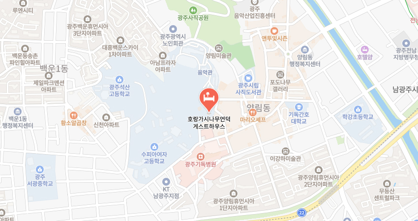

ABOUT
광주의 근대역사가 살아 숨쉬는 문화마을 양림동과 호랑가시나무언덕
서구식 건축물들과 전통 한옥이 공존하고 있어 광주에서 가장 이국적인 분위기를 느낄 수 있습니다.
게스트하우스
호랑가시나무언덕 게스트하우스는 1층에 5개, 2층에 2개(VIP실), 총 7개의 객실이 있으며
그 외에 3개의 화장실과 부엌, 거실, 컴퓨터실, 세미나실, 발코니, 옥상 등의 부대 공간을 갖추고 있습니다.
STANDARD
포사이드
아늑하고 포근한 느낌이 도는 방으로
혼자 숙박하시는데 무리가 없도록 항상 쾌적한 상태를 유지하고 있습니다.
VIP
유수마
호랑가시나무게스트하우스에서 가장 넓은 방으로
직접 만든 옷걸이와 아름다운 가구들로 꾸며진 공간입니다.
주변 관광지
더보기
양파정
광주광역시 남구 사동에 있는 일제강점기에 건립된 정자
호랑가시나무
광주광역시 남구 양림동에 있는 호랑가시나무
우일선 선교사 사택
광주광역시 남구 양림동에 있는 1920년대에 지어진 주택
찾아오시는길
광주광역시 남구 제중로47번길 18
문의하기시내버스
기독병원 정류장 하차 (게스트하우스까지 도보 10분)
금남55
양림휴먼시아2차 정류장 하차 (게스트하우스까지 도보 30분)
순환01, 진원17, 지원25, 봉선27, 문흥48, 금남59, 봉선76, 첨단95, 송정98, 화순217, 화순218
지하철
남광주역 3번 출구(게스트하우스까지 도보 25분)
문화전당역 1, 3번 출구(게스트하우스까지 도보 35분)